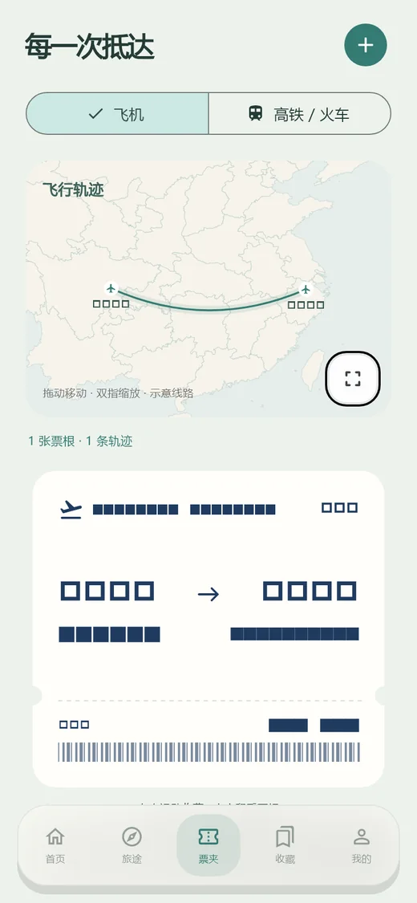
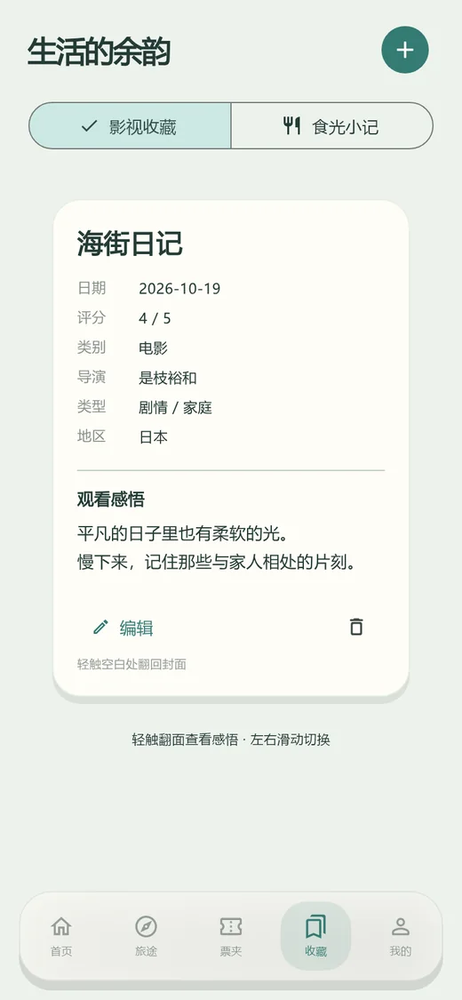
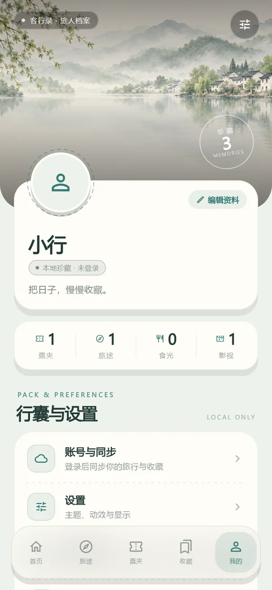
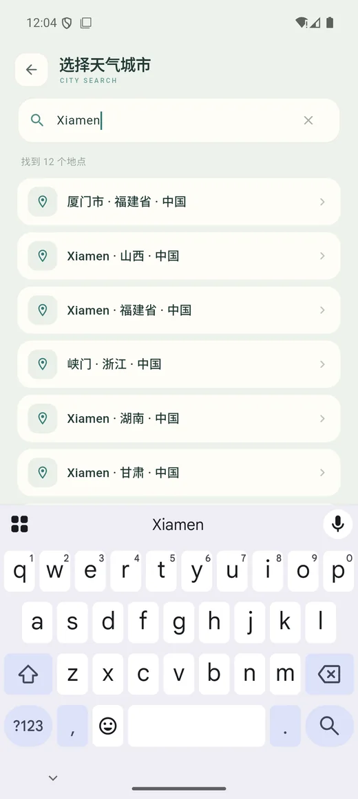

旅行日志
记下地点、照片和当时的心情，让地图慢慢亮起来。
WAYLORE · 客行录
记录去过的地方、留下的票根、吃过的一餐、看过的电影，再装订成一本属于自己的手账。数据留在本机，免费使用。

WHAT YOU CAN KEEP
旅行、票根、美食、影视、手账和天气，都在同一个地方。
记下地点、照片和当时的心情，让地图慢慢亮起来。
机票、车票都能翻面保存，正面是行程，背面是故事。
一餐一味，连价格和地点一起收好，下次还能按图索骥。
留住散场后的感受，评分、导演、主演与观后感都能放进去。
把照片、文字和贴纸排成书页，翻起来像一本真正的旅行书。
和风天气数据，自动定位当前城市，只看当下这一眼。
THE INTERFACE





DOWNLOAD
两端版本均为 1.0.0。已有用户直接覆盖安装，无需卸载；更新前建议保留一份备份。
适用于 Windows 10 / 11（64 位）。安装后离线可用，资料默认保存在本机。
下载安装程序适用于 Android 8.0 及以上。首次打开会请求定位权限，用于显示当地天气。
下载 APKiOS 版本暂未发布。Android 安装时如提示“未知来源”，请在系统设置中允许后继续。
LOCAL FIRST
记录、照片与手账都保存在本机，不登录也能完整使用。
登录后才会手动同步，云端不是必需项；退出后本机资料不受影响。
支持本地备份与恢复。换设备前先导出备份，并确认照片与记录完整。
MADE WITH CARE
客行录免费提供使用。你的反馈、一个 Star，或一份随心的赞赏，都是继续打磨它的动力。
赞赏完全自愿，不解锁功能，也不影响任何人的正常使用。谢谢你，让这个小作品走得更远。
在 GitHub 留下一个 Star ↗